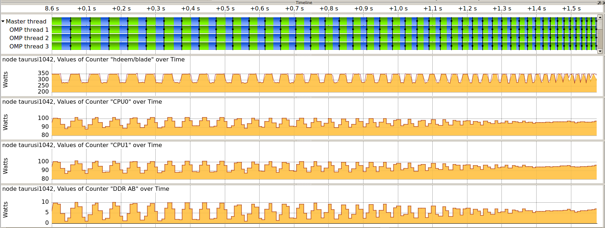

Measure Energy Consumption (Outdated)#
The Intel Haswell nodes of ZIH system are equipped with power instrumentation that allow the recording and accounting of power dissipation and energy consumption data. The data is made available through several different interfaces, which are described below.
Summary of Measurement Interfaces#
Interface |
Sensors |
Rate |
|---|---|---|
Dataheap (C, Python, VampirTrace, Score-P) |
Blade, (CPU) |
1 sample/s |
HDEEM* (C, Score-P) |
Blade, CPU, DDR |
1000 samples/s (Blade), 100 samples/s (VRs) |
HDEEM Command Line Interface |
Blade, CPU, DDR |
1000 samples/s (Blade), 100 samples/s (VR) |
Slurm Accounting ( |
Blade |
Per Job Energy |
Slurm Profiling (HDF5) |
Blade |
Up to 1 sample/s |
!!! note
Please specify `--partition=haswell --exclusive` along with your job request if you wish to use
HDEEM.
Accuracy, Temporal and Spatial Resolution#
In addition to the above mentioned interfaces, you can access the measurements through a C API to get the full temporal and spatial resolution:
** Blade:** 1000 samples/s for the whole node, includes both sockets, DRAM, SSD, and other on-board consumers. Since the system is directly water cooled, no cooling components are included in the blade consumption.
Voltage regulators (VR): 100 samples/s for each of the six VR measurement points, one for each socket and four for eight DRAM lanes (two lanes bundled).
The GPU blades also have 1 sample/s power instrumentation but have a lower accuracy.
HDEEM measurements have an accuracy of 2 % for Blade (node) measurements, and 5 % for voltage regulator (CPU, DDR) measurements.
Command Line Interface#
The HDEEM infrastructure can be controlled through command line tools. They are commonly used on the node under test to start, stop, and query the measurement device.
startHdeem: Start a measurement. After the command succeeds, the measurement data with the 1000 / 100 samples/s described above will be recorded on the Board Management Controller (BMC), which is capable of storing up to 8h of measurement data.stopHdeem: Stop a measurement. No further data is recorded and the previously recorded data remains available on the BMC.printHdeem: Read the data from the BMC. By default, the data is written into a CSV file, whose name can be controlled using the-oargument.checkHdeem: Print the status of the measurement device.clearHdeem: Reset and clear the measurement device. No further data can be read from the device after this command is executed before a new measurement is started.
!!! note
Please always execute `clearHdeem` before `startHdeem`.
Integration in Application Performance Traces#
The per-node power consumption data can be included as metrics in application traces by using the provided metric plugins for Score-P (and VampirTrace). The plugins are provided as modules and set all necessary environment variables that are required to record data for all nodes that are part of the current job.
For 1 sample/s Blade values (Dataheap):
Score-P: use the module
scorep-dataheapVampirTrace: use the module
vampirtrace-plugins/power-1.1(Remark: VampirTrace is outdated!)
For 1000 samples/s (Blade) and 100 samples/s (CPU{0,1}, DDR{AB,CD,EF,GH}):
Score-P: use the module
scorep-hdeem. This module requires a recent version ofscorep/sync-.... Please use the latest that fits your compiler and MPI version.
By default, the modules are set up to record the power data for the nodes they are used on. For further information on how to change this behavior, please use module show on the respective module.
!!! example “Example usage with gcc”
marie@haswell$ module load scorep/trunk-2016-03-17-gcc-xmpi-cuda7.5
marie@haswell$ module load scorep-dataheap
marie@haswell$ scorep gcc application.c -o application
marie@haswell$ srun ./application
Once the application is finished, a trace will be available that allows you to correlate application functions with the component power consumption of the parallel application.
!!! note
For energy measurements, only tracing is supported in Score-P/VampirTrace.
The modules therefore disables profiling and enables tracing,
please use [Vampir](../software/vampir.md) to view the trace.

{: align=”center”}By default, scorep-dataheap records all sensors that are available. Currently this is the total
node consumption and the CPUs. scorep-hdeem also records all available sensors
(node, 2x CPU, 4x DDR) by default. You can change the selected sensors by setting the environment
variables:
!!! note
The power measurement modules `scorep-dataheap` and `scorep-hdeem` are
dynamic and only need to be loaded during execution.
However, `scorep-hdeem` does require the application to be linked with
a certain version of Score-P.
??? hint “For HDEEM”
export SCOREP_METRIC_HDEEM_PLUGIN=Blade,CPU*
??? hint “For Dataheap”
export SCOREP_METRIC_DATAHEAP_PLUGIN=localhost/watts
For more information on how to use Score-P, please refer to the respective documentation.
Access Using Slurm Tools#
Slurm maintains its own database of job information, including energy data. There are two main ways of accessing this data, which are described below.
Post-Mortem Per-Job Accounting#
This is the easiest way of accessing information about the energy consumed by a job and its job
steps. The Slurm tool sacct allows users to query post-mortem energy data for any past job or job
step by adding the field ConsumedEnergy to the --format parameter:
marie@login $ sacct --format="jobid,jobname,ntasks,submit,start,end,ConsumedEnergy,nodelist,state" -j 3967027
JobID JobName NTasks Submit Start End ConsumedEnergy NodeList State
------------ ---------- -------- ------------------- ------------------- ------------------- -------------- --------------- ----------
3967027 bash 2014-01-07T12:25:42 2014-01-07T12:25:52 2014-01-07T12:41:20 taurusi1159 COMPLETED
3967027.0 sleep 1 2014-01-07T12:26:07 2014-01-07T12:26:07 2014-01-07T12:26:18 0 taurusi1159 COMPLETED
3967027.1 sleep 1 2014-01-07T12:29:06 2014-01-07T12:29:06 2014-01-07T12:29:16 1.67K taurusi1159 COMPLETED
3967027.2 sleep 1 2014-01-07T12:33:25 2014-01-07T12:33:25 2014-01-07T12:33:36 1.84K taurusi1159 COMPLETED
3967027.3 sleep 1 2014-01-07T12:34:06 2014-01-07T12:34:06 2014-01-07T12:34:11 1.09K taurusi1159 COMPLETED
3967027.4 sleep 1 2014-01-07T12:38:03 2014-01-07T12:38:03 2014-01-07T12:39:44 18.93K taurusi1159 COMPLETED
This example job consisted of 5 job steps, each executing a sleep of a different length. Note that the
ConsumedEnergy metric is only applicable to exclusive jobs.
Slurm Energy Profiling#
The srun tool offers several options for profiling job steps by adding the --profile parameter.
Possible profiling options are All, Energy, Task, Lustre, and Network. In all cases, the
profiling information is stored in an HDF5 file that can be inspected using available HDF5 tools,
e.g., h5dump. The files are stored under /scratch/profiling/ for each job, job step, and node. A
description of the data fields in the file can be found
in the official documentation.
In general, the data files
contain samples of the current power consumption on a per-second basis:
marie@login $ srun --partition haswell64 --acctg-freq=2,energy=1 --profile=energy sleep 10
srun: job 3967674 queued and waiting for resources
srun: job 3967674 has been allocated resources
marie@login $ h5dump /scratch/profiling/marie/3967674_0_taurusi1073.h5
[...]
DATASET "Energy_0000000002 Data" {
DATATYPE H5T_COMPOUND {
H5T_STRING {
STRSIZE 24;
STRPAD H5T_STR_NULLTERM;
CSET H5T_CSET_ASCII;
CTYPE H5T_C_S1;
} "Date_Time";
H5T_STD_U64LE "Time";
H5T_STD_U64LE "Power";
H5T_STD_U64LE "CPU_Frequency";
}
DATASPACE SIMPLE { ( 1 ) / ( 1 ) }
DATA {
(0): {
"",
1389097545, # timestamp
174, # power value
1
}
}
}
Using the HDEEM C API#
Please specify --partition=haswell --exclusive along with your job request if you wish to use HDEEM.
Please download the official documentation at http://www.bull.com/download-hdeem-library-reference-guide.
The HDEEM header and sample code are locally installed on the nodes.
??? hint “HDEEM header location”
`/usr/include/hdeem.h`
??? hint “HDEEM sample location”
`/usr/share/hdeem/sample/`
Further Information and Citing#
More information can be found in the paper HDEEM: high definition energy efficiency monitoring by Daniel Hackenberg et al. Please cite this paper if you are using HDEEM for your scientific work.